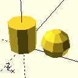
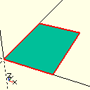

psml module¶
a library for generating OpenSCAD 3D models
https://www.github.com/wovo/psml
(c) Wouter van Ooijen (wouter.vanooijen@hu.nl)
Distributed under the Boost Software License, Version 1.0.
This is a Python library (Python 3 required) for writing 3D model code that can be rendered and processed by OpenSCAD. This documentation is meant to be usable on its own, without having to read the OpenSCAD documentation. Hence it is worded as if the PSML library contains all the functionality, while in fact it is in most cases just a thin layer on top of the OpenSCAD language.
The library has a vector class. A vector holds x, y and (optional) z numeric values. A vector is used to specify (in 2D or 3D) a size, a location or displacement, and sometimes just 2 or 3 values that are conveniently grouped together. A vector can be created from two or three values. Two vectors can be added or subtracted. A vector can multiplied with or divided by a numeric value. When a function requires a vector, it can in most cases be specified either by a vector value, or as 2 or 3 individual numeric parameters.
This library creates and manipulates 3D solid objects. The image below shows the basic solid objects: box, cylinder, cone, and sphere.
Basic flat (2D) objects are rectangle, circle, polygon, and text, as shown in the next image.
A flat object can be extended into a solid object by extruding it (in the z direction), <>
Objects and be added, subtracted and intersected with the operators +, - and *.

Manipulators can be applied to an object with the ** (power) operator. Basic manipulators are vector, rotate, mirror, scale and resize.

The repeat2, repeat4 and repeat8 manipulators repeat their subject. Repeat2 does this at the original location, and shifted by the specified vector. Repeat4 does this at the 4 corners of the rectangle specified by the vector. Repeat8 does this at the 8 corners of the box specified by the vector.
The negative manipulator creates a dominant emptiness from its subject. The image below shows at the left the addition of two normal pipes. The result is not a usable pipe crossing because the walls of each pipe will block the other pipe. In the middle it shows the addition of two pipes of which the empty interior is dominant. This produces a ‘successful’ pipe crossing. But this also removes part of the vertical axle. At the right the crossing was first made positive, which reduces the dominant emptiness to an normal, and then the vertical axle was added.

-
psml.back(v)¶
-
psml.box(x, y: Optional[float] = None, z: Optional[float] = None, rounding=0) → psml.shape¶ box shape
- Parameters
x – x size, or a vector which specifies all 3 sizes
y – y size (omit when x is a vector)
z – z size (omit when x is a vector)
rounding – rounding radius (default: no rounding)
The size of the box can be specified either by three values x, y and z, or by a vector. The box has its lower-left corner at the origin. The rounding specifies the radius of the rounding at the corners and edges. The default rounding is 0, which yields sharp boundaries.

box( 20, 30, 10 ) # or box( vector( 20, 30, 10 ), 0 )

box( 20, 30, 10, 2 ) # or box( vector( 20, 30, 10 ), 2 )
-
psml.circle(radius, facets=None)¶ circle shape
- Parameters
radius – the radius of the circle
facets – number of circle facets
The size of the circle is specified by its radius. The circle is in the x-y plane, with its center at the origin. Optionally, the number of circle facets can be specified. The default is the global variable number_of_circle_facets.

circle( 20 )

circle( 20, facets = 5 )
-
psml.cone(radius1, radius2=None, height=None, facets=None)¶ cone shape
- Parameters
radius1 – the radius of the cone at its bottom, or a vector that specifies the two radiuses and the height
radius2 – the radius of the cone at its top
height – the height of the cone
facets – number of circle facets
The size of the cone is specified by its the radius at its base, its radius at its top, and its height.
Optionally, the number of circle facets can be specified. The default is the global variable number_of_circle_facets.

cylinder( 10, 20 ) + right( 35 ) ** cylinder( vector( 20, 10 ))
-
psml.cylinder(radius, height=None, facets=None)¶ cylinder shape
- Parameters
radius – the radius of the cylinder, or a vector that specifies the radius and the height
height – the height of the cylinder
facets – number of circle facets
The size of the cylinder is specified by its the radius at its base, and its height.
Optionally, the number of circle facets can be specified. The default is the global variable number_of_circle_facets.

cylinder( 10, 20 ) + right( 35 ) ** cylinder( vector( 20, 10 ))
-
psml.down(v)¶
-
psml.dup2(v)¶ return a vector with x and y set to v
bla bla
-
psml.dup3(v)¶ return a vector with x, y and z set to v
-
class
psml.extrude(z)¶ Bases:
objectextrude operator: extend a 2d object in the z direction
-
psml.facets(numer_of_facts: int) → None¶ accuracy (number of facets) of circles, spheres and fonts
The default setting (32) is a compromise between speed and accuracy.
For quick rendering of complex designs a lower value (10, or even 5) might be appropriate.
This function has effect on shapes that are created after its call, so better call it before you create any elements.

cylinder( 10, 20 ) + vector( 25, 0, 10 ) ** sphere( 10 )
facets( 9 ) cylinder( 10, 20 ) + vector( 25, 0, 10 ) ** sphere( 10 )
-
psml.front(v)¶
-
psml.hollow_box(size: psml.vector, walls, rounding=0) → psml.shape¶ a hollow box
- Parameters
size – size of the box (x, y, z )
walls – wall thickness
rounding – rounding diameter (default: no rounding)
This is a hollow project enclosure box, Use screw_and_nut_column() to place screw holes and recesses. Use split() to separate it into a top and a bottom part. (Or use project_enclosure() which does these things for you.)
-
psml.left(v)¶
-
class
psml.m_screw(diameter, thread)¶ Bases:
objecta metric (m3 etc.) screw
-
class
psml.mirror(x, y=None, z=None)¶ Bases:
objectmirror operator: mirror an object in one or more planes
-
psml.polygon(points)¶ polygon shape
- Parameters
points – a list of 2d vectors or value pairs
A polygon is defined by the list of its edge points. Each edge point can be specified by either a vector or a pair of values.

polygon( [ [ 0, 0 ], [ 3, 0 ], [ 2, 1 ], [ 2, 2 ], [ 3, 2 ], [ 1, 3 ], [ 0, 3 ], [ 1, 1 ] ] )
-
psml.project_enclosure(size, walls, rounding=0)¶ a simple 2-part project enclosure
- Parameters
size – outer size of the enclosure (x, y, z )
walls – wall thickness
rounding – rounding diameter (default: no rounding)
This is a simple 2-part project enclosure box.
-
psml.rectangle(x, y=None, rounding=0)¶ rectangle shape
- Parameters
x – x size, or a vector which specifies both sizes
y – y size (omit when x is a vector)
rounding – rounding radius (default: no rounding)
The size of the rectangle can be specified either by two values x and y, or by a vector. The rectangle has its lower-left corner at the origin. The rounding specifies the radius of the rounding at the corners and edges. The default rounding is 0, which yields sharp boundaries.
rectangle( 20, 30 ) # or rectangle( vector( 20, 30 ), rounding = 0 )

rectangle( 20, 30, 3 ) # or rectangle( vector( 20, 30 ), rounding = 3 )
-
class
psml.repeat2(x, y=None, z=None)¶ Bases:
objectrepeat at two positions
This manipulator repeats its subject twice: once at its original location, and once at the indicated vector.
-
class
psml.repeat4(x, y=None)¶ Bases:
object
-
class
psml.repeat8(x, y=None, z=None)¶ Bases:
object
-
psml.right(v)¶
-
class
psml.rotate(x, y=None, z=None)¶ Bases:
objectrotate operator: rotate an object around one or more axises
-
class
psml.scale(x, y=None, z=None)¶ Bases:
objectresize operator: resize an object
-
psml.screw_and_nut_column(height, screw: psml.m_screw, wall=1) → psml.shape¶ a screw and nut column
- Parameters
height – height of the column
srew – screw (specifies diameter and thread lenghth)
wall – wall thickness (default 1mm)
This is a vertical screw-and-nut column for keeping two parts of an enclosure together with a flat screw and a hex nut. It is assumed to be spliced into the top and bottom parts.
-
class
psml.shape(positive: string, negative: string = '')¶ Bases:
object2D or 3D shape
Shapes can be added, subtracted or intersected by using the +, - or * operators.
-
write(file_name='output.scad')¶ write the shape to the specified file
- Parameters
file_name – name of the file
This function prints the OpenSCAD representation of the shape to the indicated file (default: output.scad). That file can be opened in OpenSCAD for visualization or export as to a .stl file.
If the file_name does not contain a “.” the suffix “.scad” is appended.
# these lines have the same effect sphere( 10 ).write() sphere( 10 ).write( "output" ) sphere( 10 ).write( "output.scad" )
-
-
psml.sphere(r, f=None)¶ sphere shape
- Parameters
radius – the radius of the sphere
facets – number of sphere facets
The size of the sphere is specified by its radius.
Optionally, the number of sphere facets can be specified. The default is the global variable number_of_sphere_facets.

sphere( 10 ) \ + ( right( 20 ) ** sphere( 6 ) ) \ + ( right( 35 ) ** sphere( 4 ))
-
psml.split_box(b, s, h, d=<psml.vector object>)¶ split an enclosure in top and bottom parts
This function splices a box into separate top and bottom parts, which are placed next to each other (default: 5 mm apart in x direction).
- Parameters
b – the box to splice
s – the size of the box
h – height at which the box is spliced
d – distance between the parts
-
psml.text(txt: string, height: float = 5, facets: int = None, args='')¶ text shape
- Parameters
txt – the text
height – the letter height
facets – number of facets used to draw the letters
args – extra arguments
Optionally, the number of facets can be specified. The default is the global variable number_of_text_facets.

sphere( 10 ) \ + ( right( 20 ) ** sphere( 6 ) ) \ + ( right( 35 ) ** sphere( 4 ))
-
psml.up(v)¶
-
class
psml.vector(x: Union[float, vector], y: Optional[float] = None, z: Optional[float] = None)¶ Bases:
object2d or 3d vector
This is a 2d (x,y) or 3d (x, y, z) vector.
A vector is used to denote a location, a displacement (shift) a size, or sometimes just 2 or 3 numeric values.
A vector has members x, y and z. For a 2d vector, the z value is None.
Vectors can be added or subtracted using the + or - operators. Vectors can be multiplied or divided by a scalar using the * and / operators.
-
psml.y2(v)¶
-
psml.y3(v)¶
-
psml.z3(v)¶
-
class
psml.vector(x: Union[float, vector], y: Optional[float] = None, z: Optional[float] = None) 2d or 3d vector
This is a 2d (x,y) or 3d (x, y, z) vector.
A vector is used to denote a location, a displacement (shift) a size, or sometimes just 2 or 3 numeric values.
A vector has members x, y and z. For a 2d vector, the z value is None.
Vectors can be added or subtracted using the + or - operators. Vectors can be multiplied or divided by a scalar using the * and / operators.
-
__init__(x: Union[float, vector], y: Optional[float] = None, z: Optional[float] = None)¶ create from x and y, and an optional z value
Create a 2d vector from x and y values, or a 3d vector from x, y and z values.
When x is a vector, that vector is simply copied.
-
__add__(rhs: psml.vector) → psml.vector¶ add two vector values (member-wise addition)
Adding two 2d vectors yields a 2d vector, adding two 3d vectors yields a 3d vector.
When a 2d vector and a 3d vector are added, the z value of the 2d vector is assumed to be 0.
-
__sub__(rhs: psml.vector) → psml.vector¶ subtract two vector values (member-wise subtraction)
Subtracting two 2d vectors yields a 2d vector, subtracting two 3d vectors yields a 3d vector.
When a 2d vector and a 3d vector are subtracted, the z value of the 2d vector is assumed to be 0.
-
__mul__(v: float) → psml.vector¶ multiply a vector by a scalar (member-wise multiplication)
-
__div__(v: float)¶ divide a vector by a scalar (member-wise division)
-
__str__() → string¶ convert to [ x, y ] or [ x, y, z ] string format
-
__pow__(subject: psml.shape) → psml.shape¶ apply the vector to a shape
- Parameters
subject – the shape that is to be displaced (shifted)
A vector can be applied to a shape using the ** operator. This will displace (shift) the shape.
-